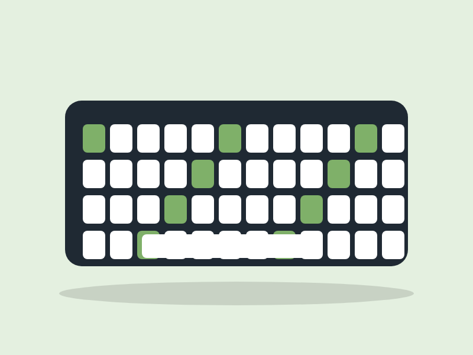

Bamboo 75 Setup Guide
The official manual for the Bamboo 75 from Elegant Panda Gadgets. Follow it to go from box to typing in about ten minutes.

Introduction
The Bamboo 75 is a compact mechanical keyboard with 82 keys, hot-swappable switches and three connection modes. You can see it in the gadget deck and check stock on the inventory page.
In the Box
- Bamboo 75 keyboard
- 1.8 m braided USBC cable
- 2.4 GHz wireless receiver
- Keycap and switch puller
- Five spare switches
- Quick-start card
Connecting
The keyboard has three modes. Slide the switch on the back to choose one.
- Wired: Plug the USBC cable into the keyboard and your computer. It charges while it types.
- 2.4 GHz: Plug the receiver into a USB port and slide the switch to 2.4G. It pairs automatically.
- Bluetooth: Slide the switch to BT, then hold
Fn+1for three seconds until the light blinks. Select "Bamboo 75" in your device's Bluetooth settings.
Layers and Shortcuts
Hold Fn to reach the second layer.
Fn+1,2or3: switch between three Bluetooth devicesFn+LeftorRight: change the backlight effectFn+UporDown: adjust the brightnessFn+Esc: reset the keyboard to factory settings
Customizing
You can change what any key does with the free Bamboo app. Open the app, click a key and choose a new action for it. Your changes save to the keyboard, so they stay with it on any computer.
Troubleshooting
- Will not turn on: Charge it with the USBC cable for 30 minutes.
- Bluetooth will not connect: Remove "Bamboo 75" from your device list and pair again.
- One key does not respond: Pull the keycap and switch, check that the pins are straight, and press the switch back in.
- Typing lags in wireless mode: Move the receiver closer, or use a USB extension cable.
Care
Unplug the keyboard and wipe it with a dry microfiber cloth. Pull the keycaps every few months to clean underneath, and keep liquids away from it.